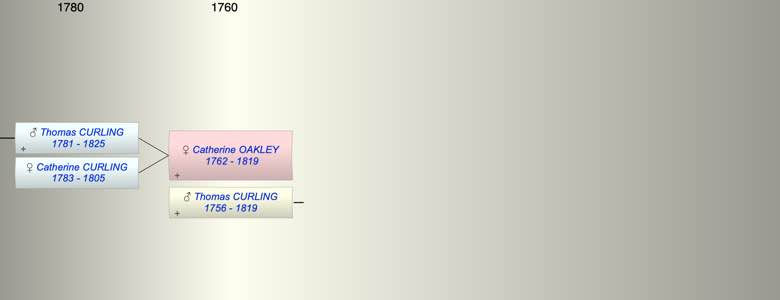

| [Index] |
| Catherine OAKLEY (1762 - 1819) |
|  |
| b. 1762 |
| +. Thomas CURLING (1756 - 1819) |
| d. 1819 aged 57 |
| Children (2): |
| Thomas Oakley CURLING (1781 - 1825) |
| Catherine CURLING (1783 - 1805) |
| Events in Catherine OAKLEY (1762 - 1819)'s life | |||||
| Date | Age | Event | Place | Notes | Src |
| 1762 | Catherine OAKLEY was born | ||||
| 1781 | 19 | Birth of son Thomas Oakley CURLING | |||
| 23 Mar 1783 | 21 | Birth of daughter Catherine CURLING | St Nicholas at Wade | Note 1 | |
| 1805 | 43 | Death of daughter Catherine CURLING (aged 22) | Ham, Deal | buried 16 May 1805 Ham, Deal. | |
| 1819 | 57 | Catherine OAKLEY died | |||
| 1819 | 57 | Death of husband Thomas CURLING (aged 63) | |||
| Note 1: bap 23 Mar 1783 St Nicholas at Wade |
| Created on a Mac™ using iFamily for Mac™ on 8 Oct 2023 |